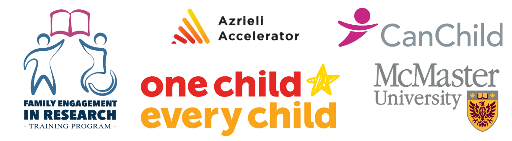

Patient and Family
Engagement in Research
Resources
Thank you for using our app!
Here's your tailored list of resources to prepare for patient and family engagement!
Tip: Select all (CNTL A) then copy (CNTL C) and paste (CNTL P) the content of this page into a word doc or email to save for yourself to review later!
How to Engage Patient Partners when Choosing the Research Question
Co-Creating and Family Engagement when Designing a Study
Involving Patient Partners in Funding and Ethics Applications
Patient and Family Engagement during Study Recruitment and Data Collection
Data Analysis and Interpretation with Patient and Family Partners
Enhancing Dissemination and Knowledge Translation with your Patient and Family Partners
Researcher Training in Patient Engagement
Guidance for Compensating Patient Partners
How to Provide Support and Build Capacity
Tips for Meaningful Collaboration with Partners
Where to Find Patient Partners

← Back